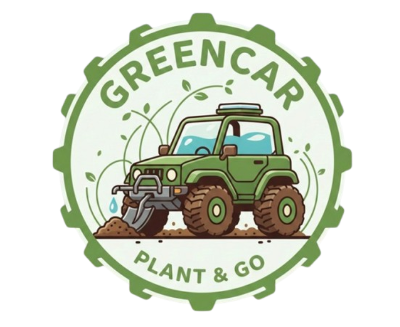

Tecnología, robótica y conciencia ambiental
GreenCar es un proyecto tecnológico y educativo enfocado en el desarrollo de soluciones innovadoras para el cuidado del medio ambiente mediante el uso de robótica, programación y electrónica. El proyecto consiste en la creación de un vehículo robótico capaz de desplazarse de manera autónoma y sembrar semillas en puntos estratégicos, contribuyendo a procesos de reforestación y recuperación de espacios naturales.
La iniciativa nace como respuesta a problemas ambientales actuales como la deforestación, la pérdida de biodiversidad y el impacto del cambio climático. A través de la integración de tecnología accesible y conocimientos de ingeniería, GreenCar demuestra que es posible aplicar la innovación tecnológica para generar soluciones sostenibles.
Además de su impacto ambiental, GreenCar tiene un enfoque educativo, ya que permite a los estudiantes aplicar conocimientos de programación, robótica, diseño 3D y electrónica en un proyecto real. De esta manera se fomenta el pensamiento crítico, el trabajo en equipo y el desarrollo de habilidades tecnológicas orientadas a resolver problemas del mundo actual.

Desarrollar un robot ecológico capaz de sembrar semillas de manera automatizada utilizando tecnologías de programación, electrónica y diseño para contribuir al cuidado del medio ambiente.
El robot GreenCar se mueve mediante motores DC controlados por un sistema electrónico que permite dirigir su recorrido dentro del área donde se realizará el proceso de siembra.
El microcontrolador ESP32 actúa como el cerebro del robot, ejecutando el programa que controla el movimiento del vehículo y la activación de los mecanismos del sistema.
El robot cuenta con un servomotor que activa el mecanismo encargado de liberar las semillas en puntos específicos mientras el vehículo avanza por el terreno.
Gracias a la programación y la integración de hardware y software como la aplicacion para controlar el carro, GreenCar puede realizar el proceso de siembra de forma eficaz, optimizando tiempo y esfuerzo humano.